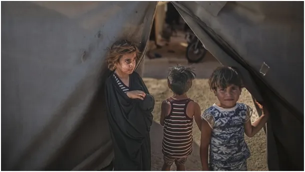
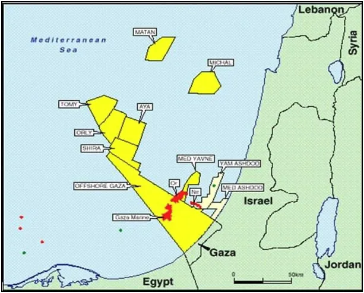
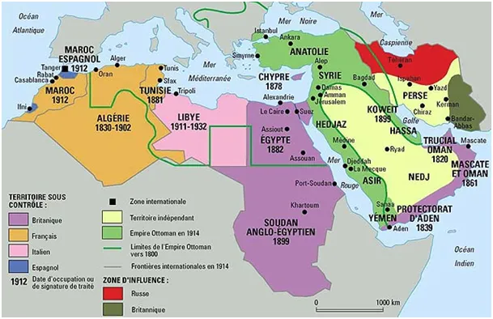

Co jest stratą czasu.
Na pierwszej mapce bogate złoża gazu na terytorium Autonomii Palestyńskiej u wybrzeży Gazy. Zgodnie z prawem morskim do Gazy należą liczne surowce w wyłącznej morskiej strefie ekonomicznej.
Dla Palestyńczyków bogactwo w gaz w tym rejonie okazało się klątwą. Historia XX w. to historia podboju terenów bogatych w gaz i ropę.


Persja i Imperium Osmańskie zostały rozebrane najpierw przez Francję i Wielka Brytanię, a później, po II Wojnie Światowej przez USA. W podziale łupów na trupie Imperium Rosyjskiego brał udział Związek Radziecki, bandyckie, niewolnicze państwo uprzemysłowione w błyskawicznym tempie od 1918 r. przez kapitał z USA. ZSRR potem był użyty do zniszczenia konkurencyjnej dla USA potęgi Niemiec.
Dziś, gdy ceny energii szybko rosną, potencjał gazowy Palestyny jest zagrożeniem dla Izraela. Od dekady trwa pod stołem gra o zasoby na Morzu Śródziemnym. W tym czasie na mocnego gracza w regionie wyrosła Turcja, która chce zablokować budowę rurociągów z Izraela przez Cypr do Europy.

Obecna masakra w Gazie to próba upieczenia dwóch pieczeni na jednym pożarze: eksterminacja matek i młodzieży palestyńskiej, aby zlikwidować "zagrożenie demograficzne" w przyszłości oraz przejęcie politycznej kontroli nad strefą gazy wraz z jej złożami.
Takich mamy sojuszników. Sam Izrael podaje, że odnajdują swych kolejnych zakładników po bombardowaniach znanych im miejsc przetrzymywania. To się nazywa doktryna Hannibala mająca na celu rezygnację w przyszłości brania zakładników przez stronę palestyńską. Światem rządzą koncerny energetyczne, w tym kontekście przejmowanie się, że partia X wyłączyła partii Y w bantustanie Z nieoglądany kanał telewizyjny jest stratą czasu.
Paweł Klimczewski